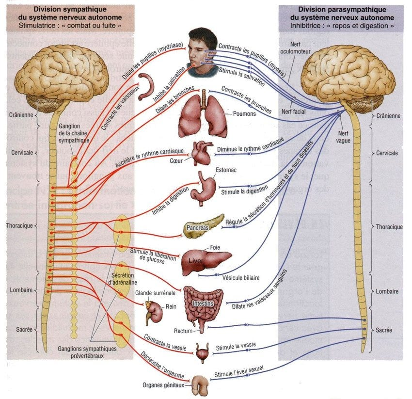

May 26, 2020
Action cannot go without theory never ever it will be able to do it

Is it technology who has made theory ‘’ irrevant ‘’ in mankind’s today’s point of view. Is the industrial complex who needs manual hard workers who promulagated handed actions to the top of everything. Theory is what makes a lot with a less. Actions cannot be performed without it. Even the one who does the most ‘’mindless’’ job is always doing theory but he is may be not educated to do it well. Those who don’t care about theory are those who are running to the bottom. Theory is what links ideas and actions but it can take a while before it flows between them. That’s a key to really understand that we are a beautiful piece of creation because it normally doesn’t take long time for our hand to raise. Theory is one out of three important elements which always must connect. Patience, no science … when lots of ideas connects togheter we can extract from them so many understanding but the key is to never put our eyes away from our goal. We cannot defeat time or plan with it because it’s an asset that we will never own or have…